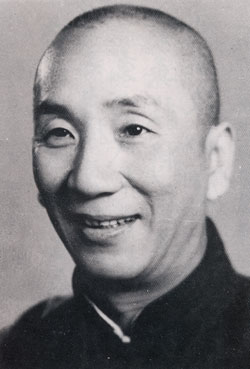

Garanta o seu lugar no workshop do maior especialista em marketing da atualidade
Nesse evento, você vai aprender todos os segredos que vão te fazer ser um empreendedor sem precisar contar com a sorte.

O Palestrante
Carlos Fontana é conhecido por dar palestras que abalam a estrutura do marketing tradicional. Prepare-se para sair do evento com uma nova visão do que é possível ser feito para o seu negócio decolar.
Formado em Marketing pela Universidade XYZ e fundador da MarkUp, a empresa vencedora dos últimos 5 Prêmios MarketingBR.